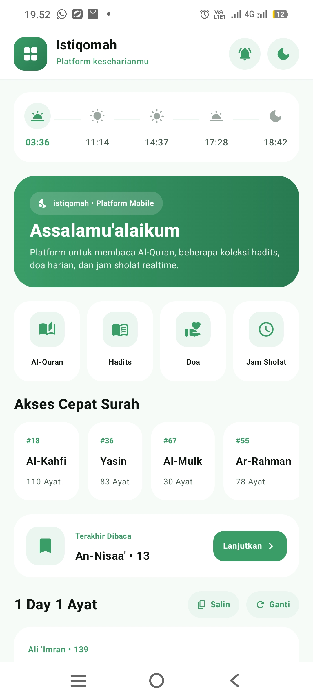

Platform keseharianmu untuk membaca Al-Quran dengan Tajwid berwarna & murrotal, koleksi hadits Kutubus Sittah, doa harian, dan jam sholat realtime berbasis koordinat GPS.

Dirancang dengan antarmuka yang bersih, mudah digunakan, dan tanpa gangguan iklan.
Dilengkapi fitur Tajwid Highlight untuk membantu membedakan hukum bacaan secara visual, transliterasi Latin, terjemahan Indonesia, dan pemutar audio Murottal.
Koleksi 6 kitab hadits utama (Bukhari, Muslim, Abu Daud, Ibnu Majah, Nasa'i, Tirmidzi) dengan fitur pencarian cepat nomor & terjemahan.
Doa harian lengkap dengan teks Arab, transliterasi Latin, terjemahan, rujukan perawi, serta tombol cepat salin teks doa.
Hitung otomatis dari koordinat GPS saat ini, notifikasi lokal, audio adzan 30 detik, atau pilih file audio Anda sendiri.
Desain modern, minimalis, dan mudah dipahami yang dirancang untuk kenyamanan membaca dalam waktu lama.
Nikmati akses bacaan Al-Quran dengan pewarnaan Tajwid Highlight, koleksi hadits, kumpulan doa harian, dan jam sholat GPS tanpa gangguan iklan.
*Format file .APK untuk smartphone Android (Android 7.0+)